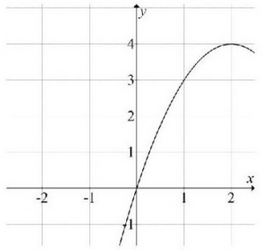
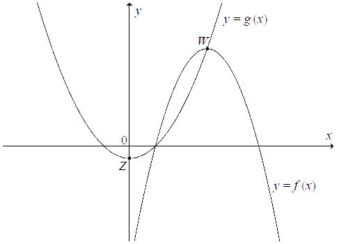

Jesteś tutaj: Matura
podstawowa - kurs - część 27 - zadania
Matura podstawowa - kurs - część 27 - zadania
Cały kurs na: ./matematyka-matura-podstawowa-kurs.html.
Na rysunku przedstawiono fragment wykresu funkcji kwadratowej \( f \).  Funkcja \( f \) określona jest
wzorem
Funkcja \( f \) określona jest
wzorem
Funkcja \( f \) określona jest
wzorem A.\(f(x)=-\frac{1}{2}(x-3)(x+1) \)
B.\(f(x)=\frac{1}{2}(x-3)(x+1) \)
C.\(f(x)=-\frac{1}{2}(x+3)(x-1) \)
D.\(f(x)=\frac{1}{2}(x+3)(x-1) \)
A
Parabola o wierzchołku \(W = (−3, 5)\) i ramionach skierowanych w dół może być
wykresem funkcji określonej wzorem
A.\( y=2\cdot (x+3)^2+5 \)
B.\( y=-2\cdot (x-3)^2+5 \)
C.\( y=-2\cdot (x+3)^2+5 \)
D.\( y=-2\cdot (x-3)^2-5 \)
C
Funkcja kwadratowa, której zbiorem wartości jest przedział \( ( -\infty, -3\rangle
\) , może być określona wzorem
A.\(y=(x+2)^2-3 \)
B.\(y=-(x+3)^2 \)
C.\(y=-(x-2)^2-3 \)
D.\(y=-x^2+3 \)
C
Funkcja kwadratowa \(y=x^2+bx+c\) jest malejąca dla \(x\in (-\infty ;2 \rangle\) a
zbiorem jej wartości jest przedział \(\langle -4;\infty )\). Postać kanoniczna tej funkcji opisana
jest wzorem
A.\( f(x)=(x-2)^2-4 \)
B.\( f(x)=(x+2)^2+4 \)
C.\( f(x)=(x+4)^2+2 \)
D.\( f(x)=(x-4)^2+2 \)
A
Wskaż funkcję kwadratową, której zbiorem wartości jest przedział \( (-\infty ;3
\rangle \).
A.\(f(x)=-(x-2)^2+3 \)
B.\(f(x)=(2-x)^2+3 \)
C.\(f(x)=-(x+2)^2-3 \)
D.\(f(x)=(2-x)^2-3 \)
A
Zbiorem wartości funkcji kwadratowej \(f(x)=-\frac{1}{3}x^2-2x+c\) jest przedział
\((-\infty ,7\rangle \). Zatem współczynnik \(c\) jest równy
A.\( -3 \)
B.\( 4 \)
C.\( 7 \)
D.\( 10 \)
B
Wskaż funkcję kwadratową, której zbiorem wartości jest przedział \(\langle-2,
\infty )\).
A.\( y=-2x^2+2 \)
B.\( y=-(x+1)^2-2 \)
C.\( y=2(x-1)^2+2 \)
D.\( y=(x+1)^2-2 \)
D
Wykresem funkcji kwadratowej \( f(x)=2x^2+bx+c \) jest parabola, której
wierzchołkiem jest punkt \( W=(4,0) \). Oblicz wartości współczynników \( b \) i \( c \).
\(b=-16\), \(c=32\)
W układzie współrzędnych narysowano część paraboli o wierzchołku w punkcie \( A=(2,
4) \), która jest wykresem funkcji kwadratowej \( f \).  Funkcja \( f \) może być opisana wzorem
A.\(f(x)=(x-2)^2+4 \)
B.\(f(x)=(x+2)^2+4 \)
C.\(f(x)=-(x-2)^2+4 \)
D.\(f(x)=-(x+2)^2+4 \)
C
Funkcja kwadratowa \(f\) określona jest wzorem \(f(x) = ax^2 + bx + c\). Zbiorem
rozwiązań nierówności \(f(x) \gt 0\) jest przedział \((0,12)\). Największa wartość funkcji
\(f\) jest równa \(9\). Oblicz współczynniki \(a\), \(b\) i \(c\) funkcji \(f\).
\(a=-\frac{1}{4}\), \(b=3\), \(c=0\)
Wyznacz wzór funkcji kwadratowej \(f\) w postaci ogólnej, wiedząc, że zbiorem
wartości tej funkcji jest przedział \((-\infty ,-1\rangle \), a wartość \(-5\) osiąga ona
dla dwóch argumentów: \(2\) i \(10\).
\(f(x)=-\frac{1}{4}x^2+3x-10\)
Na rysunku są przedstawione fragmenty wykresów funkcji kwadratowych \(f\) i \(g\).
Funkcja \(f\) jest określona wzorem \(f(x)=-x^2+6x-5\), a mniejsze z jej miejsc zerowych jest
jednocześnie miejscem zerowym funkcji \(g\). Wierzchołek \(W\) paraboli, która jest wykresem funkcji
\(f\), leży na wykresie funkcji \(g\), a wierzchołek \(Z\) paraboli będącej wykresem funkcji \(g\)
leży na osi \(Oy\) układu współrzędnych. Wyznacz wzór funkcji \(g\). 
\(g(x)=\frac{1}{2}(x-1)(x+1)\)